레이어
레이어 개요
레이어 레이어는 업로드 및 편집된 데이터셋의 컬럼 값을 활용하여 데이터셋을 직관적으로 볼 수 있게 스타일을 변경합니다. 또한 프로젝트에 가입되어 있지 않은 외부 사람에게도 공유가 가능합니다.
레이어 스타일 유형
레이어의 스타일 유형으로 단일심볼, 분류값 사용, 단계구분 등 크게 3가지로 구분되어 있습니다.
스타일 유형 |
특징 |
|---|---|
단일심볼 |
레이어의 기본 마커, 색상, 투명도 등의 스타일을 변경합니다. |
분류값 사용 |
필드를 선택하고, 필드 안의 값들에 따라 분류하여 스타일을 변경합니다. |
단계구분 |
필드를 선택하고, 분류방법을 선택해 분류하여 스타일을 변경합니다. |
메타데이터
레이어의 메타데이터는 레이어 이름, 레이어 소개 공개 , 범위 등에 대한 정보를 담고 있습니다
메타데이터 |
특징 |
|---|---|
제목 |
레이어 제목 |
소개 |
레이어에 관한 간략한 설명 |
공개 범위 |
레이어의 공개 범위 |
작성일 |
레이어 생성일 |
갱신일 |
레이어 갱신일 |
레이어 만들기
프로젝트 메뉴의 레이어를 클릭하고 우측 상단의 새로운 레이어 버튼을 클릭합니다. 업로드 및 편집된 데이터셋을 선택하고 메타데이터를 설정한 후 완료 버튼을 클릭하면 레이어가 생성됩니다.
중요
데이터셋 선택 -> 메타데이터 설정 -> 완료
다음의 내용은 레이어를 만드는 방법에 대해 순서대로 설명합니다.
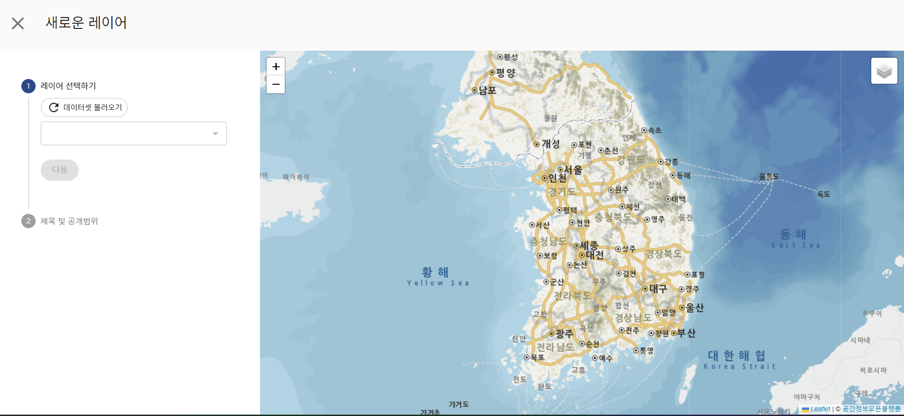레이어 화면 오른쪽 상단의 새로운 레이어 버튼을 클릭합니다.
데이터셋 불러오기 버튼을 클릭하여 업로드 및 편집 된 데이터셋의 목록을 불러옵니다.
데이터셋의 목록 중 레이어로 만들 데이터셋을 선택한 후 다음 버튼을 클릭합니다.
메타데이터 정보를 입력 후 완료 버튼을 클릭하여 레이어를 생성합니다.
레이어 검색하기
레이어는 프로젝트에 참여중인 사람 중 생성할 수 있는 권한이 있는 팀원들이 만들 수 있습니다. 많은 레이어가 존재할 경우 특정 레이어의 이름을 검색하여 손쉽게 찾을 수 있는 검색기능이 있습니다.
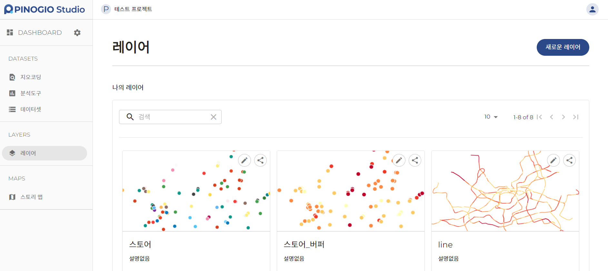레이어 목록 상단의 검색창에 검색할 레이어 이름을 입력합니다.
엔터키를 입력하여 검색창에 입력된 레이어명을 포함한 레이어를 검색합니다
레이어 정보보기
생성된 레이어의 정보를 확인하는 기능입니다 레이어의 메타데이터, 스타일, 원본 데이터셋 등의 정보를 확인할 수 있습니다.
다음의 내용은 레이어의 정보에 대한 내용을 설명합니다.
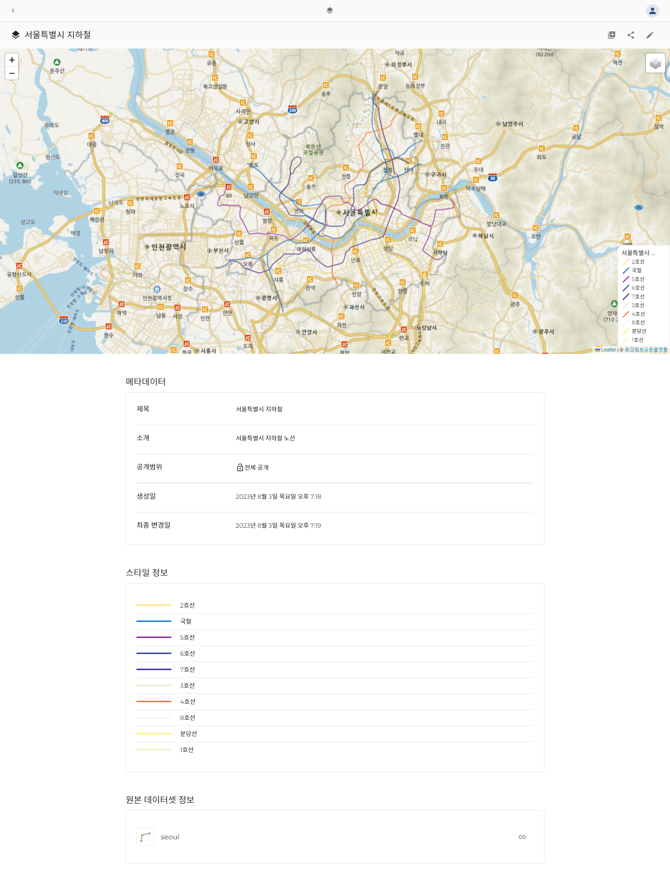메타데이터
생성된 레이어의 기본 정보인 제목, 소개, 공개범위, 생성일 및 변경일에 대한 정보를 보여줍니다. 공개범위는 전체 공개, 팀 사용자에게 공개, 비공개로 구분됩니다.
옵션명 |
특징 |
|---|---|
전체 공개 |
모든 피노지오 사용자가 레이어에 접근 가능 |
팀 사용자에게 공개 |
프로젝트 팀 사용자만 레이어에 접근 가능 |
비공개 |
데이터셋 생성자만 레이어에 접근 가능 |
스타일 정보
레이어에 적용된 스타일의 정보 및 범례를 보여줍니다.
원본 데이터셋 정보 만들어진 레이어의 원본 데이터셋을 보여줍니다. 원본 데이터셋의 우측 클립아이콘을 클릭하면 원본 데이터셋 정보 페이지로 이동합니다.
레이어 스타일 편집하기
생성된 레이어의 스타일을 편집하는 기능입니다. 스타일을 편집하여 지도에서 어떻게 표현되는지 확인할 수 있습니다. 레이어를 생성하면 기본 스타일은 단일심볼로 설정됩니다.
단일심볼
데이터의 채우기 색상 및 투명도, 외곽선 색상, 투명도 및 두께, 포인트 데이터일 경우 마커의 형식까 지 스타일 변경 할 수 있습니다.
축척에 따른 보이기 설정은 최소 최대 , 축척을 선택/입력하여 그 사이의 줌 레벨(축척) 에서만 지도영역에 레이어가 표시될 수 있도록 하는 기능입니다.
다음의 내용은 단일심볼의 스타일 변경 방법에 대해 설명합니다.
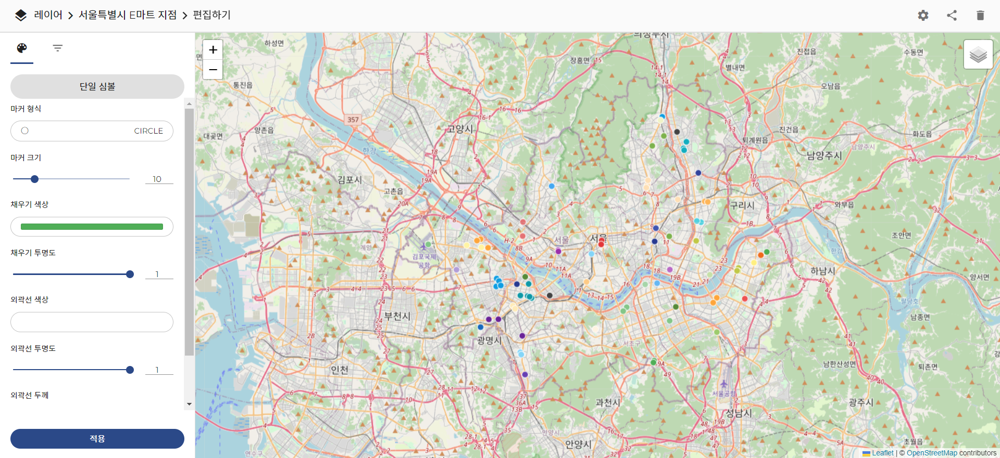왼쪽의 스타일 설정 화면 위쪽에 있는 스타일 유형 선택 중 단일 심볼을 선택합니다.
포인트 데이터의 경우 마커, 채우기, 외곽선, 스타일 등을 설정합니다.
라인 데이터의 경우 외곽선 스타일을 설정합니다.
폴리곤 데이터의 경우 채우기, 외곽선 스타일을 설정합니다.
아래의 적용 버튼을 클릭하여 스타일을 적용합니다.
분류값 사용
데이터의 필드를 선택하여 그 필드의 실제 값들을 활용해 스타일을 변경 합니다. 분류된 스타일의 범례(색상 및 값)는 왼쪽 화면에 나타납니다.
다음의 내용은 분류값 사용의 스타일 변경 방법에 대해 설명합니다.
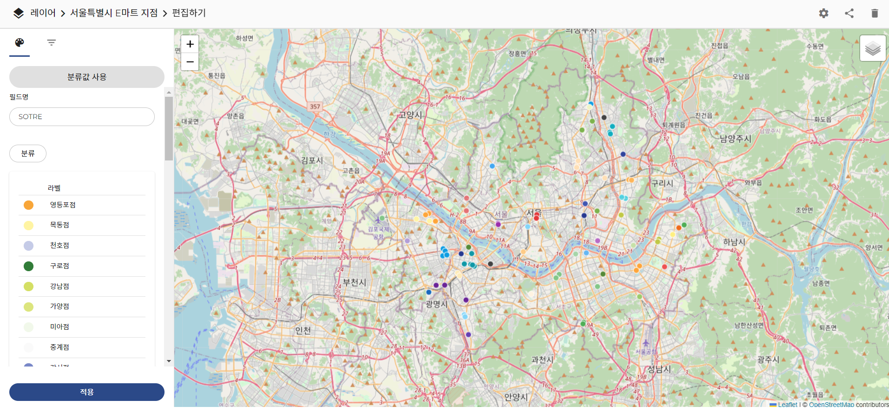왼쪽의 스타일 설정 화면 위쪽에 있는 스타일 유형 선택 중 분류값 사용을 선택합니다.
데이터의 필드 중 분류하여 스타일할 필드를 선택합니다.
분류 버튼을 클릭하고 변경될 스타일의 범례를 확인합니다.
적용 버튼을 클릭하여 스타일을 적용합니다.
단계구분
데이터의 필드, 급간분류방법, 색상램프 급간 등을 선택하여 스타일을 변경합니다. 단계구분에서는 숫자 타입의 데이터 필드만 선택할 수 있습니다.
다음의 내용은 단계구분의 스타일 변경 방법에 대해 설명합니다.
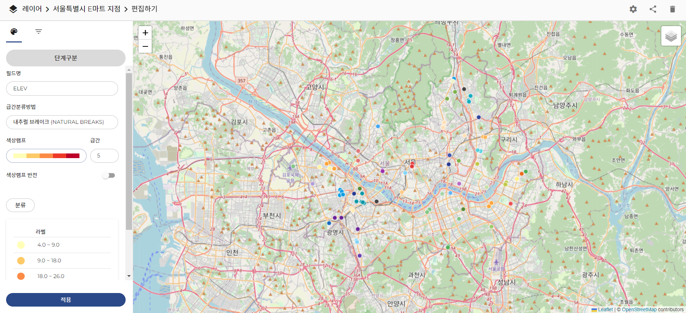왼쪽의 스타일 설정 화면 위쪽에 있는 스타일 유형 선택 중 단계구분을 선택합니다.
데이터의 필드 중 단계구분하여 스타일할 필드를 선택합니다.
단계구분 할 급간분류방법을 선택합니다.
변경할 스타일의 색상램프 및 급간을 선택합니다.
색상램프 반전을 활성화하면 분류가 반대로 적용됩니다.
분류 버튼을 클릭하고 변경될 스타일의 범례를 확인합니다.
적용 버튼을 클릭하여 스타일을 적용합니다.
급간분류방법은 내추럴 브레이크, 등 간격, 분위수, 표준 편차 등 4가지이며, 다음과 같습니다.
급간분류방법명 |
특징 |
|---|---|
내추럴 브레이크 |
자연적 급간구분 알고리즘에 의한 방법(Jenks natural breaks 기반 |
등 간격 |
동일한 간격으로 등급을 구분하는 방법 |
분위수 |
동일한 개수의 비율로 등급을 구분하는 방법 |
표준 편차 |
급간을 표준 편차 값으로 분류하는 방법 |
레이어 설정하기
레이어 페이지에서 우측 상단의 톱니바퀴(메타데이터설정) 를 클릭하여 레이어의 메타데이터 내용을 수정할 수 있습니다.
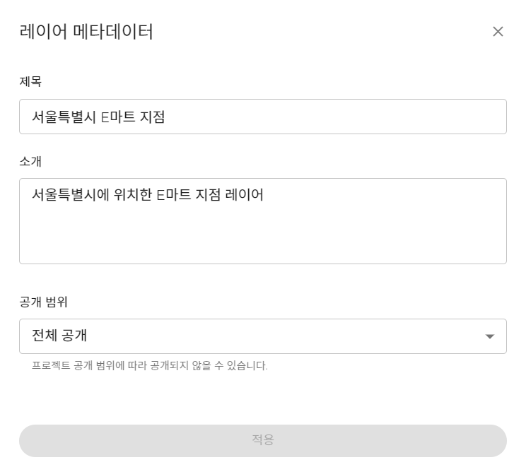레이어 공유하기
생성되어 있는 레이어를 공유하는 기능입니다. 레이어 공유를 통해 다른 사용자가 레이어에 접근 할수 있습니다.
다음의 내용은 레이어를 공유하는 방법에 대해 설명합니다.
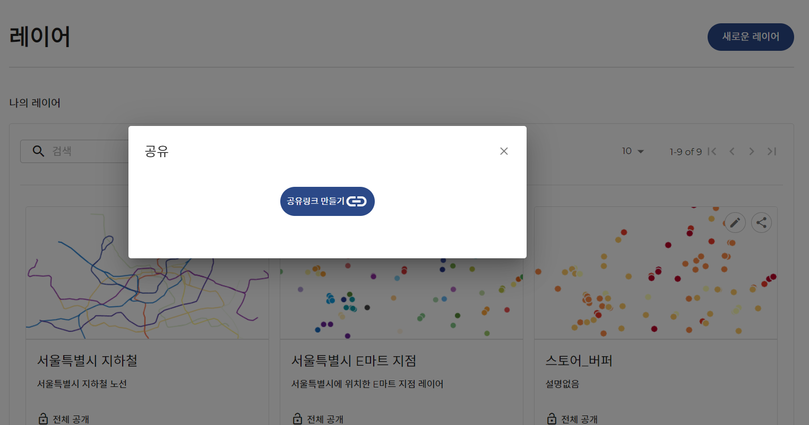레이어 목록 중 해당 레이어 오른쪽의 공유아이콘을 클릭합니다.
새로 생성된 레이어의 경우 기본적으로 공유하지 않음으로 설정되어 있습니다.
공유링크 만들기를 클릭하여 레이어 공유를 위한 링크를 생성합니다.
레이어 스타일 편집하기 화면에서도 공유링크를 만들 수 있는데, 편집화면의 오른쪽상단 공유아이콘 을 클릭합니다.
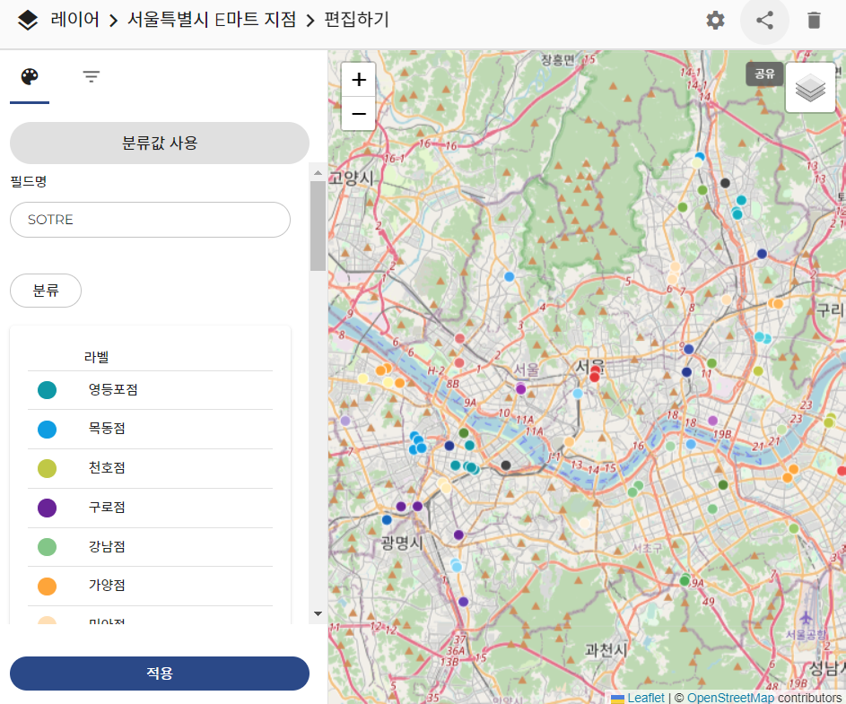레이어 공유권한 설정
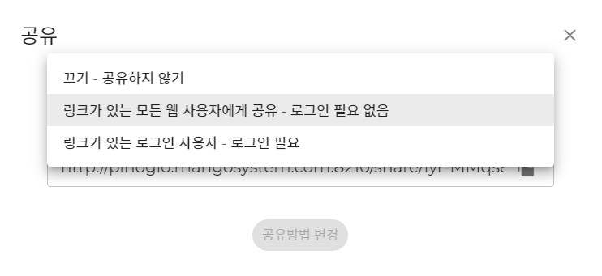공유링크 만들기가 완료되면 링크가 있는 모든 웹 사용자에게 공유 - 로그인 필요 없음 옵션이 기본으로 설정이 됩니다.
공유옵션의 종류와 설명에 대해서는 아래 표 내용을 참고합니다.
아래에 표시된 공유링크를 확인하고, 복사아이콘 을 클릭하여 클립보드에 복사할 수 있습니다.
끄기 - 공유하지 않기 옵션이 선택될 경우 공유링크 제거가 활성화 되고 클릭 시 공유를 제거할수 있습니다.
링크가 있는 모든 웹 사용자에게 공유 또는 링크가 있는 로그인 사용자 옵션이 선택될 경우 공유방법 변경 을 클릭할 수 있습니다.
현재 선택된 옵션을 변경하지 않을 경우 클릭할 수 없도록 비활성화 상태가 유지됩니다.
공유옵션 |
특징 |
|---|---|
끄기 - 공유하지 않기 |
현재 레이어를 공유하지 않습니다. |
링크가 있는 모든 웹 사용자에게 공유 - 로그인 필요 없음 |
피노지오 로그인을 하지 않아도 데이터셋 접근이 가능합니다. |
링크가 있는 로그인 사용자 - 로그인 필요 |
피노지오 로그인을 해야 데이터셋 접근이 가능합니다. |
레이어 삭제하기
만들어진 레이어를 삭제하기 위한 기능입니다. 레이어 편집하기 페이지 오른쪽 상단의 삭제아이콘을 클릭하면 삭제를 진행하기 위한 팝업창이 표시됩니다.
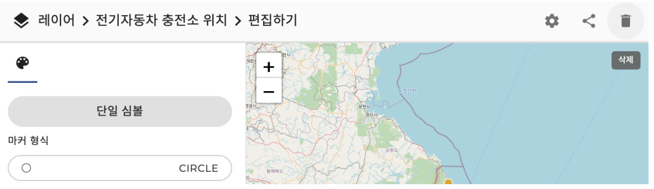아래는 레이어 삭제 방법에 대한 설명입니다.
레이어 편집하기 페이지의 오른쪽 상단의 삭제아이콘 을 클릭합니다.
팝업창이 표시되고 현재 선택된 레이어의 제목을 확인할 수 있습니다.
삭제하려고 하는 레이어를 사용하는 스토리맵이 있을 경우 내용이 표시됩니다.
레이어 삭제시 스토리맵에 추가되어 있는 레이어도 같이 삭제 됩니다.
삭제 를 클릭하면 레이어가 삭제됩니다.
취소 를 클릭하면 레이어 삭제를 취소하고 팝업창을 닫습니다.